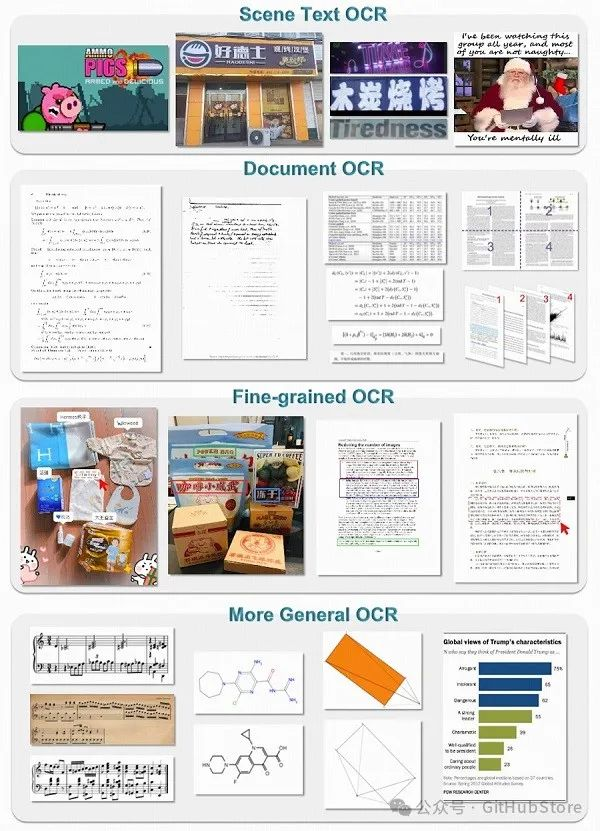

项目简介
基于 GenAI + 多模态 LLM 实现的 GOT 580M 的端到端 OCR 模型正式发布！支持处理复杂任务，如表格、公式甚至几何形状 BLEU 0.972 的分数，支持提取 Arxiv 公式、多页 OCR 以及 1024*1024 分辨率大小识别！

安装
-
我们的环境是cuda11.8+torch2.0.1
-
克隆此存储库并导航到 GOT 文件夹
git clone https://github.com/Ucas-HaoranWei/GOT-OCR2.0.gitcd 'the GOT folder'
-
安装包
conda create -n got python=3.10 -yconda activate gotpip install -e .
-
安装Flash-Attention
pip install ninjapip install flash-attn --no-build-isolation
演示
-
纯文本 OCR：
python3 GOT/demo/run_ocr_2.0.py --model-name /GOT_weights/ --image-file /an/image/file.png --type ocr-
格式化文本 OCR：
python3 GOT/demo/run_ocr_2.0.py --model-name /GOT_weights/ --image-file /an/image/file.png --type format-
细粒度 OCR：
python3 GOT/demo/run_ocr_2.0.py --model-name /GOT_weights/ --image-file /an/image/file.png --type format/ocr --box [x1,y1,x2,y2]python3 GOT/demo/run_ocr_2.0.py --model-name /GOT_weights/ --image-file /an/image/file.png --type format/ocr --color red/green/blu-
multi-crop OCR:
python3 GOT/demo/run_ocr_2.0_crop.py --model-name /GOT_weights/ --image-file /an/image/file.png-
多页OCR（图像路径包含多个.png文件）：
python3 GOT/demo/run_ocr_2.0_crop.py --model-name /GOT_weights/ --image-file /images/path/ --multi-page-
渲染格式化的 OCR 结果：
python3 GOT/demo/run_ocr_2.0.py --model-name /GOT_weights/ --image-file /an/image/file.png --type format --render注意：渲染结果可以在/results/demo.html中找到。请打开 demo.html 查看结果。
训练
-
火车样本可以在这里找到。请注意，’ ‘中的’对话’-‘人性’-‘价值’是必要的！
-
该代码库仅支持我们的 GOT 权重的后训练（stage-2/stage-3）。
-
如果您想从我们论文中描述的第一阶段开始进行训练，您需要这个repo 。
deepspeed /GOT-OCR-2.0-master/GOT/train/train_GOT.py--deepspeed /GOT-OCR-2.0-master/zero_config/zero2.json --model_name_or_path /GOT_weights/--use_im_start_end True--bf16 True--gradient_accumulation_steps 2--evaluation_strategy "no"--save_strategy "steps"--save_steps 200--save_total_limit 1--weight_decay 0.--warmup_ratio 0.001--lr_scheduler_type "cosine"--logging_steps 1--tf32 True--model_max_length 8192--gradient_checkpointing True--dataloader_num_workers 8--report_to none--per_device_train_batch_size 2--num_train_epochs 1--learning_rate 2e-5--datasets pdf-ocr+scence--output_dir /your/output/path
笔记：
-
修改constant.py中对应的数据信息。
-
将conversation_dataset_qwen.py中的第37行更改为您的data_name。
评估
-
我们使用Fox和OneChart基准，其他基准可以在权重下载链接中找到。
-
评估代码可以在 GOT/eval 中找到。
-
您可以使用evaluate_GOT.py来运行eval。如果你有8个GPU，–num-chunks可以设置为8。
python3 GOT/eval/evaluate_GOT.py --model-name /GOT_weights/ --gtfile_path xxxx.json --image_path /image/path/ --out_path /data/eval_results/GOT_mathpix_test/ --num-chunks 8 --datatype OCR项目链接
https://github.com/Ucas-HaoranWei/GOT-OCR2.0
扫码加入技术交流群，备注「开发语言-城市-昵称」
合作请注明
关注「GitHubStore」公众号